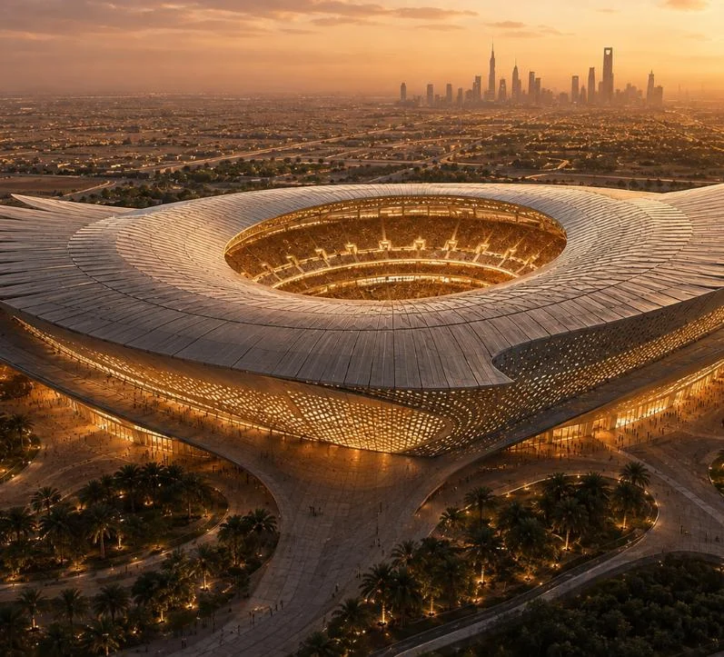
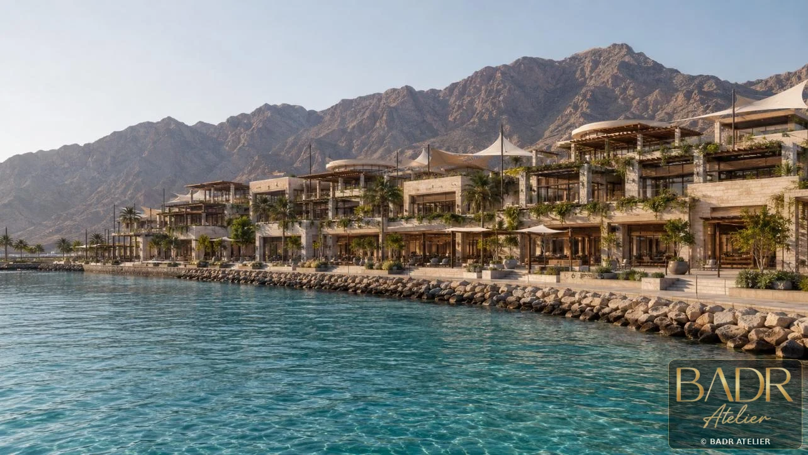
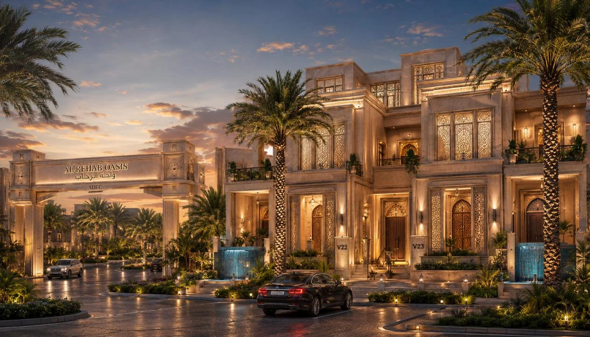
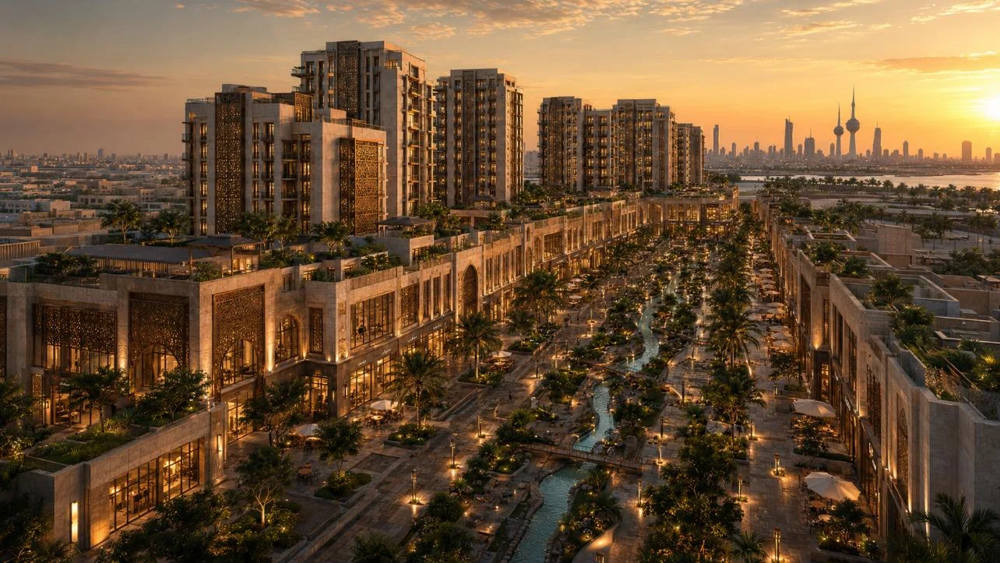
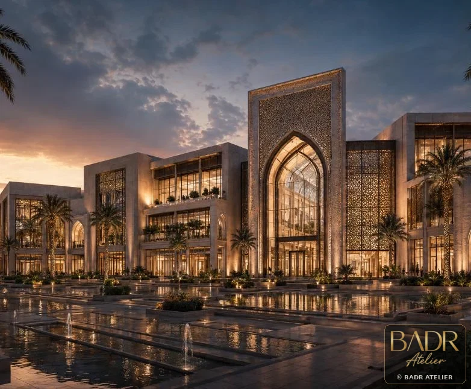
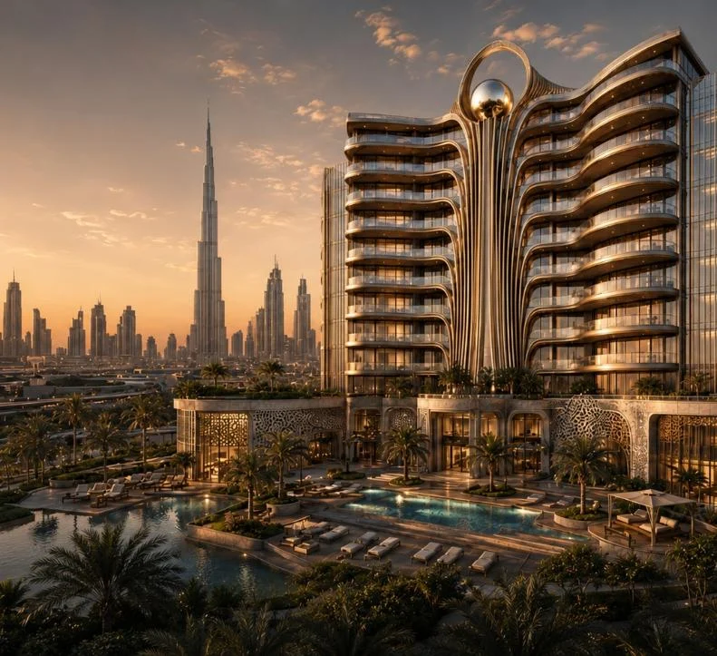
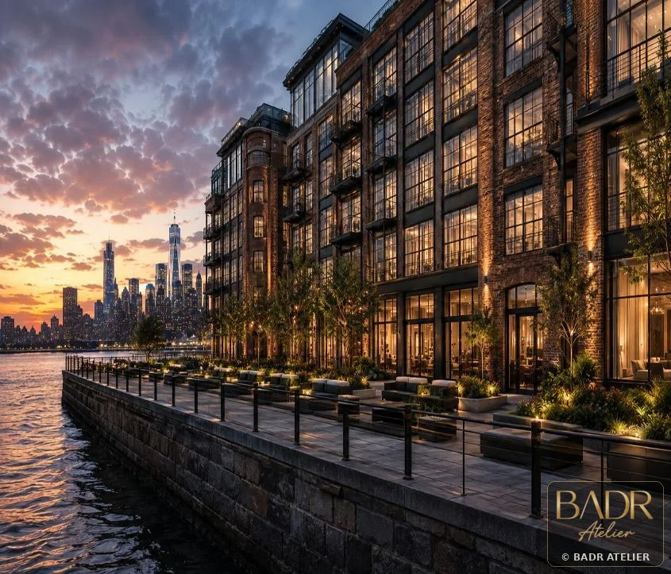
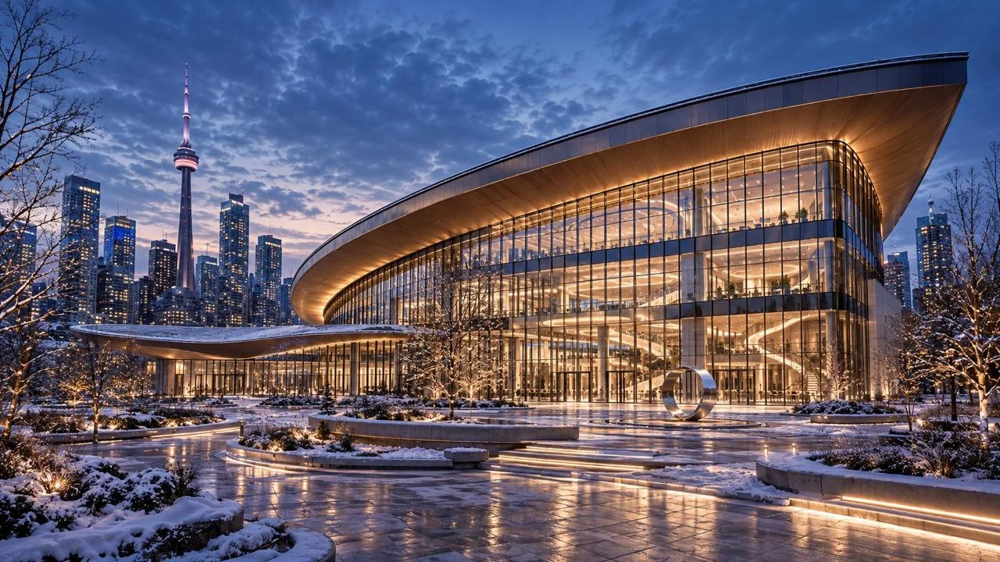
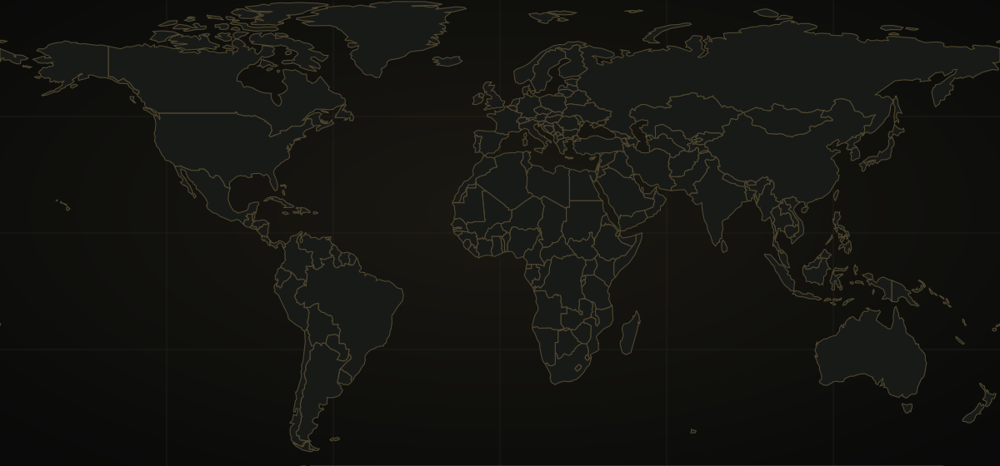

Complete Architecture Portfolio
Projects shaped by a stronger idea before they are shaped by form.
We do not present architecture as isolated images. Each project begins with how people will arrive, live, move, gather and remember the place — then turns that thinking into architecture.


BADR ATELIERFrom Vision to Built Value


Development Strategy + Residential
We begin with the land question: what deserves to be built here, and how can the answer become a community with identity and value?

12 • Jeddah, Saudi Arabia • Residential + Developer Strategy
Al Rehab Oasis
A landscape-led residential community where villa hierarchy, wellness, arrival and a central green spine work together as one lifestyle proposition.
View Project
13 • Jeddah, Saudi Arabia • Development Concepts
Jeddah Development Concepts
The file is treated as a portfolio of options: each concept gives a different answer to the same development question — what should this site become, and how should the first image in the market feel?
View ProjectMixed-Use + Hospitality + Destination
When hospitality, living and commerce meet, movement, operations and public life become the tools for creating a destination — not a collection of buildings.
14 • Makkah, Saudi Arabia • Mixed-Use + Hospitality
ATHAR Makkah
The project asks how a site in Makkah can become more than buildings: a destination with identity, operation logic, investment value and a memorable user journey.
View Project
07 • Kuwait City, Kuwait • Mixed-Use + Climate
Wadi Court Mixed-Use
The project uses the wadi as an urban device: cooling the public realm, activating retail, and turning circulation into a lifestyle spine.
View Project08 • Muscat, Oman • Waterfront Destination
Waterfront Lifestyle Center
The center turns the coastline into a sequence of experiences: arrival, promenade, terrace, view and dining. The architecture is not simply on the water; it is shaped by the water.
View Project
05 • Doha, Qatar • Retail + Destination
Souq Galleria Mall
Rather than presenting retail as stacked shops, the project builds a journey of discovery: shaded thresholds, patterned screens, family leisure and a central social heart.
View Project
04 • Dubai, UAE • Vertical Residential
Desert Pearl Residences
The tower is treated as an urban jewel: reflective, calm and service-oriented, with the podium acting as a retreat from the density of the city.
View ProjectResidential + Living
The strongest residential value does not begin with the façade. It begins with privacy, light, landscape and the community people return to every day.
01 • Cairo, Egypt • Residential + Courtyard
Andalus Courtyard Residences
The project turns the courtyard into a development engine: a place where privacy, social connection, climate comfort and brand identity are not separate decisions, but one spatial strategy.
View Project
03 • Cairo, Egypt • Private Villas
Badr Heights Villas
A restrained luxury language is used to make each villa feel private, warm and connected to landscape without becoming visually excessive.
View Project
06 • Toronto, Canada • Residential + Community
Maple Courtyard Homes
The project makes the shared court the centre of value: a threshold between individual privacy and neighbourly life, shaped by autumn landscape, brick, limestone and timber.
View Project
10 • New Jersey, USA • Adaptive Reuse + Lofts
Hudson Urban Lofts
The project keeps the emotional weight of warehouse heritage while turning it into warm residential value: brick, steel, light, greenery and the river become part of the living product.
View ProjectSacred + Civic + Creative
In sacred, civic and creative work, value is measured by more than area — it is measured by what the place gives to people and what remains in memory.

02 • Riyadh, Saudi Arabia • Sacred + Community
Al Noor Grand Mosque
The mosque is designed as a sequence of calm thresholds: from city to courtyard, from shade to filtered light, from movement to devotion.
View Project09 • Riyadh, Saudi Arabia • Civic + Arena
Falcon Arena Concept
Inspired by the falcon as a symbol of vision and strength, the arena creates a memorable civic silhouette and a clear event journey from plaza to seat.
View Project
11 • Toronto, Canada • Commercial + Creative
Crescent Design Hub
The project positions creativity as a public experience: the atrium becomes an interface between studio work, exhibition, collaboration and the city.
View ProjectPortfolio Geography
Different markets. Different contexts. One discipline: read the place before shaping the answer.
The live map highlights the countries and cities represented across the wider BADR portfolio.

Live project geography
Glowing locations reveal the portfolio as a connected network of project experience.
Glowing locations reveal the portfolio as a connected network of project experience.
Start with the site